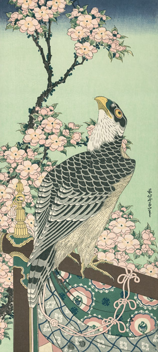

作品名 「桜花に鷹」
花言葉 「精神美」「優美な女性」「純潔」
桜
「精神美」
サクラ全般の花言葉は「精神の美」「優美な女性」「純潔」。桜が日本の国花という位置づけから品格を表すシンボルとして、美しさを託した言葉を託されたとされている。桜では開花のみならず、散って桜吹雪が舞う雅な様を西洋、日本ともに美しさ、はかなさが連想される花言葉にされている。
桜花に鷹
葛飾北斎
｢前北斎為一筆｣の落款から、｢冨嶽三十六景｣などを描いた70歳代の作品と知られる。判型や落款を同じくする亀や鯉の図があり、吉祥画題として描かれたことが想像される。天保5年(1834)、75歳で出版された『富嶽百景』初編の袋に同じ姿の鷹が描かれている。
| 作品名 | 桜花に鷹 |
| 作者 | 葛飾北斎 |
| 制作年 | 19世紀 |
| 種類 | 長大判 錦絵 |
| 所蔵 | 東京国立博物館 |